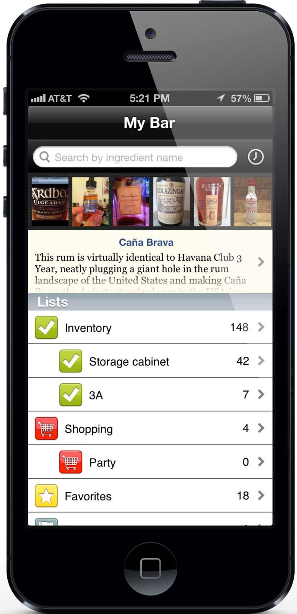
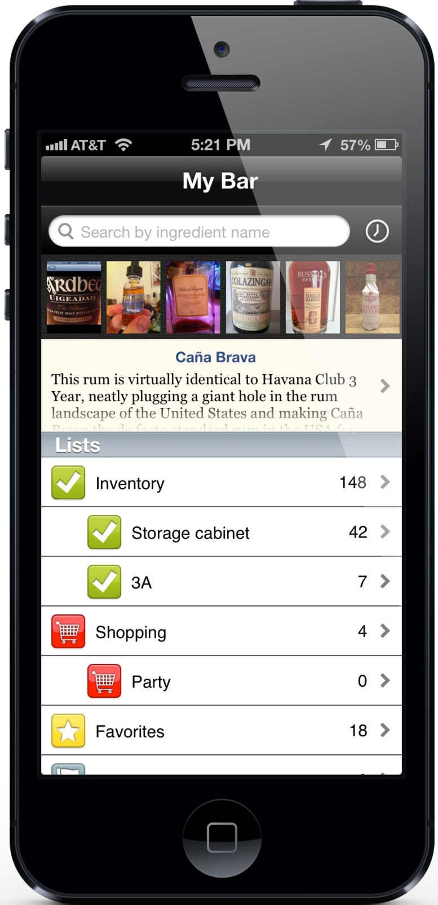
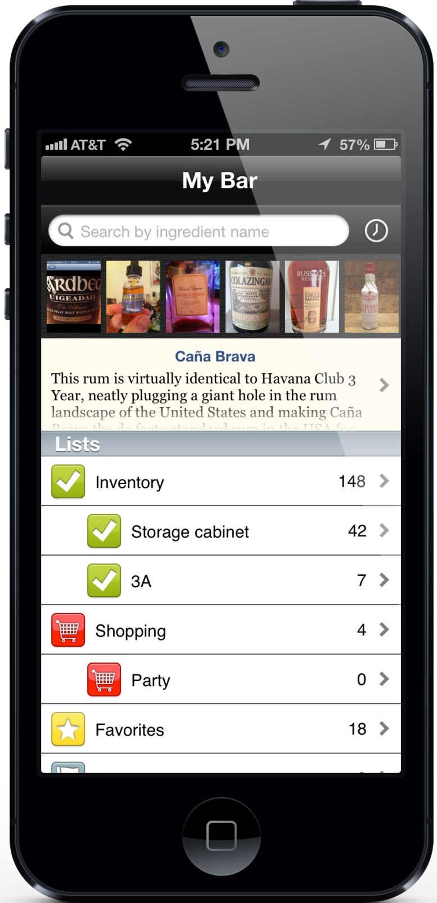
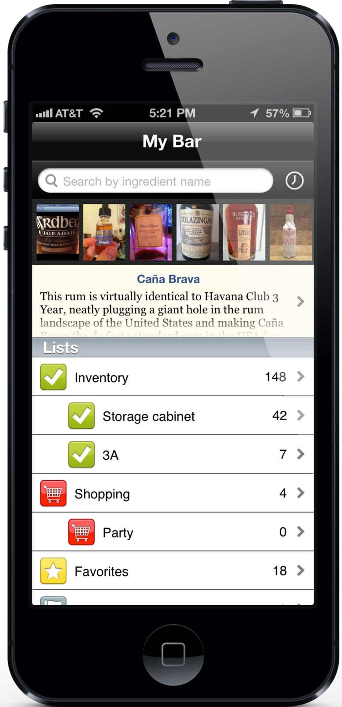

My Bar does things that no other app can, but My Bar is not for everyone. Please do not purchase My Bar until you know it will provide you with value.
My Bar sports a built-in, searchable, browse-able database of 5400+ liquors and other mixed drink ingredients, both commercial and generic. That number has been growing an average of about 35 per week (since 2011) through crowd sourcing and diligent editorial support. Database updates happen several times a month. Please see our free app Bar Ingredients for a demonstration.
 At the core of My Bar is your Inventory list: your inventory is what you’ve got. You can track quantities and—new in My Bar 1.7—segment your inventory, if you keep your stuff in more than one place or just want to break things up.
At the core of My Bar is your Inventory list: your inventory is what you’ve got. You can track quantities and—new in My Bar 1.7—segment your inventory, if you keep your stuff in more than one place or just want to break things up.
My Bar automatically keeps a simple log of everything you’ve ever put into your Inventory that has since left your inventory. Your Inventory History an undervalued way to recall what you may be missing.
Your Shopping list is for what you want to remember to pick up when you get the chance. You can segment that, too, to make event planning easier.
Your Favorites list is a simple way to memorialize the products you’ve loved, because that list can sometimes get long.
Your Flagged list is there because sometimes you see something you want to investigate further, just maybe not this second.
Today, the database in My Bar recognizes 6500+ barcodes for 2400+ products, internationally, and that number is growing an average of 35 per week (since 2011) through crowd sourcing.
Use the built-in camera on your device both to look up items and to batch scan into your list. Add unrecognized bar codes on the fly. Submit them for others’ use. My Bar uses the best-in-class RedLaser™ barcode library for bar code scanning.
New in My Bar 1.8: peruse and download your Inventory and other lists on-line from any web browser with our experimental new Web Reports feature. On Web Reports, you can see your Inventory filtered and grouped. The Collections report exposes the nascent and developing sets of comparable products in across your holdings and the Anti-Inventory reveals what you don’t have. For now, Web Reports are free of charge, anonymous, and dead easy to enable from the My Bar home screen.
You can add custom ingredients for limited edition items as well as anything else that isn’t included in the built-in database. Your custom ingredients appear in search results and your lists like any other ingredient.
All your lists, custom ingredients and notes are automatically backed up and sync’d through iCloud if you’re an iCloud user. Yes, your inventory can be shared across your iOS devices.
Behind the My Bar experience is the software developer, editor, and boozehound, Martin Doudoroff, who’s never far from reach, answering questions, releasing database updates and providing an uncommon personal touch. Because he built this app for himself.
While I haven’t yet updated this video to show list segmentation, it will still give you a good tour of the software.—Martin
This App is simply the best thing available for bar management! More then that it is a rich, superbly edited encyclopedia for all things related to the art of drink.iheijoushin
Great app. A must!ssna3111
I love the app and have finally managed to inventory my bar.Carl N.
I could hug you. Then buy you a drink. Then hug you again.Lucky
“This App is simply the best thing available for bar management! More then that it is a rich, superbly edited encyclopedia for all things related to the art of drink.”iheijoushin
“This is a very helpful app for a home bar enthusiast. The bar code scanning is a great feature. While there are bound to be items that the scanner can not find, the app lets you submit the missing items and they update the apps database often with our submissions. I contacted the company with questions and I received quick response with real information, that is the kind of attention to customer service all companies should provide.”Minneapolis Me
“With MyBar you can easily catalog the spirits in your home bar -- or make a list of ingredients you want to buy. Just scan the product's bar code using your phone's camera and presto! I've only just started using this, but I've already found it to be very useful.”7303771513
“The app is great and I'm looking forward to spending some time scanning my inventory, adding barcodes etc.”Keith L.
“Thank you for this great app”Stefan G.
“Thanks for a great app, and quick answer.”Tony L.
“I don't mind telling you this is a great app. I've been keeping track of my inventory in a list app for years and I always wanted something more robust. This is a winner in my book.”Marshall F.
“The app is really cool. Nice work!”Ed P.
Version 1.0 • Released September 1, 2011
Version 1.1 • Released December 6, 2011
Version 1.1.1 • Released January 6, 2011
Version 1.5 • Released February 7, 2012
Version 1.6 • Released October 12, 2012
Version 1.7 • Released March 14, 2013
Version 1.8 • Released August 21, 2013
Version 1.8.1 • Released September 30, 2013
Version 1.8.2 • Released October 17, 2013
Current Price: US$13.99